This blog tracks the performance of the CliMA Land global simulations in terms its spatial patterns in the following aspects:
- Gross primary productivity (GPP)
- Vegetation transpiration (T)
- Normalized differential vegetation index (NDVI)
- Enhanced vegetation index (EVI)
- Near infrared reflection of vegetation (NIRv)
- Solar induced chlorophyll fluorescence (SIF) at 683, 740, 757, and 771 nm
Per release, the major improvements are:
- a12-gm3-wd1: GPP and VIs error increased (more grids now!) and SIF errors is not impacted on average
- a11-gm3-wd1: GPP and SIF errors decreased (scale Vcmax to 60% of the dataset)
- a11-gm2-wd1: GPP and SIF errors decreased (carotenoid contribution to PPAR removed)
- a10-gm2-wd1: GPP error decreased (new photosynthesis model and adding boundary layer conductance) slightly while SIF errors increased slightly (due to adding UV radiation)
- a9-gm2-wd1: GPP and SIF errors decreased slightly (due to adding Kd temperature dependency)
- a8-gm2-wd1: GPP error increased slightly while reflectance and SIF errors decreased (due to adding CI seasonality)
- a7-gm1-wd1: GPP error decreased while SIF errors increased slightly (due to adding a smoothing algorithm for J calculation)
- a6-gm1-wd1: GPP error increased while SIF errors decreased slightly (fixed a typo of the coefficient 1.6, was 1 before)
- a5-gm1-wd1: GPP and SIF errors increased (fixed the SIF yield scaling bug)
- a4-gm1-wd1: GPP error increased slightly (included FR contribution to PPAR, namely 700-750 nm)
- a3-gm1-wd1: GPP error increased slightly (add Vcmax profiles)
- a2-gm1-wd1: GPP and SIF errors changed a little bit (SIF wavelengths more accurate, have Vcmax25 TD based on moving average T)
- a1-gm1-wd1: very first global simulation
The RMSE per variable per simulation are
| Version | GPP | T | NDVI | EVI | NIRv | SIF 683 | SIF 740 | SIF 757 | SIF 771 |
|---|---|---|---|---|---|---|---|---|---|
| a12-gm3-wd1 | 1.764 | NA | 0.173 | 0.151 | 0.493 | 0.044 | 0.141 | 0.097 | 0.079 |
| a11-gm3-wd1 | 1.368 | NA | 0.135 | 0.160 | 0.257 | 0.051 | 0.154 | 0.095 | 0.063 |
| a11-gm2-wd1 | 2.276 | NA | 0.135 | 0.160 | 0.257 | 0.057 | 0.178 | 0.110 | 0.066 |
| a10-gm2-wd1 | 2.616 | NA | 0.135 | 0.160 | 0.257 | 0.071 | 0.224 | 0.139 | 0.076 |
| a9-gm2-wd1 | 2.751 | NA | 0.134 | 0.161 | 0.257 | 0.068 | 0.220 | 0.136 | 0.075 |
| a8-gm2-wd1 | 2.783 | NA | 0.134 | 0.161 | 0.257 | 0.070 | 0.231 | 0.144 | 0.079 |
| a7-gm1-wd1 | 2.561 | NA | 0.139 | 0.173 | 0.259 | 0.074 | 0.261 | 0.167 | 0.091 |
| a6-gm1-wd1 | 3.371 | NA | 0.139 | 0.173 | 0.259 | 0.073 | 0.257 | 0.163 | 0.088 |
| a5-gm1-wd1 | 2.619 | NA | 0.138 | 0.174 | 0.259 | 0.074 | 0.260 | 0.166 | 0.090 |
| a4-gm1-wd1 | 2.567 | NA | 0.138 | 0.174 | 0.258 | 0.057 | 0.185 | 0.117 | 0.068 |
| a3-gm1-wd1 | 2.382 | NA | 0.138 | 0.174 | 0.258 | 0.057 | 0.185 | 0.117 | 0.068 |
| a2-gm1-wd1 | 2.368 | NA | 0.138 | 0.174 | 0.258 | 0.057 | 0.185 | 0.117 | 0.068 |
| a1-gm1-wd1 | 2.374 | NA | 0.138 | 0.174 | 0.258 | 0.047 | 0.185 | 0.131 | 0.065 |
Model Versions
| Version Tag | Linear Change History |
|---|---|
| A12 | Fix a bug in f_sunlit (RT impacted) |
| A11 | Not counting Car absorption in PPAR+SIF |
| Add new SIF spectrum option (V7) | |
| A10 | Extend spectra down to 300 nm |
| Balance FR and VIS PAR in photosyntheis | |
| Bug fix: account for wind in Gb | |
| Remove f_PSII option | |
| Add option to prescribe leaf refl+trans | |
| Add option to use broadband soil albedo | |
| Set f_PPAR to 1 in broadband RT mode | |
| A9 | Add option for a TD Kd and maxPSII |
| Add function to prescribe Kf | |
| A8 | Fix a bug in sunlit APAR |
| A7 | Add quadratic colimitation to C3 J (0.7) |
| Add option to prescribe f_PSII | |
| Add option to set SIF excitation WL | |
| A6 | Fix a bug in Medlyn model (coeff 1.6) |
| Note | History in ClimaLand-0.1 |
| A5 | Fix SIF yield scaling bug |
| Add ePAR scenario | |
| Add prescibed CI option | |
| A4 | Extend PAR definition to 400-750 nm |
| A3 | Add vertical Vcmax profile |
| A2 | Use minimum beta instead of mean beta |
| Use moving average optimal T from CLM5 | |
| A1 | Version used for initial run |
Weather Drivers
| Version Tag | Description |
|---|---|
| WD1 | ERA5 Single Levels |
GriddingMachine Selections
GM3
| Variable | GriddingMachine Tag |
|---|---|
| s_cc | SC_2X_1Y_V1 |
| s_α | SOIL_VGA_12X_1Y_V1 |
| s_n | SOIL_VGN_12X_1Y_V1 |
| s_Θr | SOIL_SWCR_12X_1Y_V1 |
| s_Θs | SOIL_SWCS_12X_1Y_V1 |
| p_ch | CH_20X_1Y_V1 |
| p_chl | CHL_2X_7D_V1 |
| p_ci | CI_2X_1M_V3 |
| p_lai | LAI_MODIS_2X_8D_YYYY_V1 |
| p_sla | SLA_2X_1Y_V1 |
| p_vcm | VCMAX_2X_1Y_V2 (60%) |
| t_ele | ELEV_4X_1Y_V1 |
| t_lm | LM_4X_1Y_V1 |
| t_pft | PFT_2X_1Y_V1 |
GM2
| Variable | GriddingMachine Tag |
|---|---|
| s_cc | SC_2X_1Y_V1 |
| s_α | SOIL_VGA_12X_1Y_V1 |
| s_n | SOIL_VGN_12X_1Y_V1 |
| s_Θr | SOIL_SWCR_12X_1Y_V1 |
| s_Θs | SOIL_SWCS_12X_1Y_V1 |
| p_ch | CH_20X_1Y_V1 |
| p_chl | CHL_2X_7D_V1 |
| p_ci | CI_2X_1M_V3 |
| p_lai | LAI_MODIS_2X_8D_YYYY_V1 |
| p_sla | SLA_2X_1Y_V1 |
| p_vcm | VCMAX_2X_1Y_V2 |
| t_ele | ELEV_4X_1Y_V1 |
| t_lm | LM_4X_1Y_V1 |
| t_pft | PFT_2X_1Y_V1 |
GM1
| Variable | GriddingMachine Tag |
|---|---|
| s_cc | SC_2X_1Y_V1 |
| s_α | SOIL_VGA_12X_1Y_V1 |
| s_n | SOIL_VGN_12X_1Y_V1 |
| s_Θr | SOIL_SWCR_12X_1Y_V1 |
| s_Θs | SOIL_SWCS_12X_1Y_V1 |
| p_ch | CH_20X_1Y_V1 |
| p_chl | CHL_2X_7D_V1 |
| p_ci | CI_2X_1Y_V1 |
| p_lai | LAI_MODIS_2X_8D_YYYY_V1 |
| p_sla | SLA_2X_1Y_V1 |
| p_vcm | VCMAX_2X_1Y_V2 |
| t_ele | ELEV_4X_1Y_V1 |
| t_lm | LM_4X_1Y_V1 |
| t_pft | PFT_2X_1Y_V1 |
a12-gm3-wd1
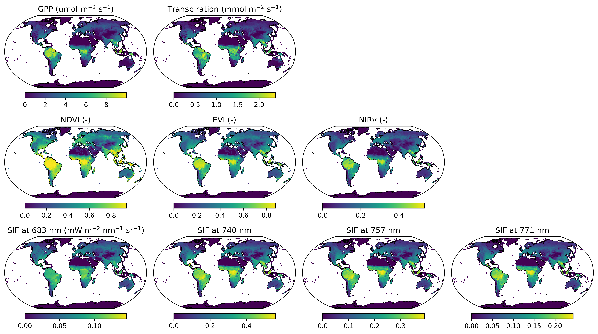
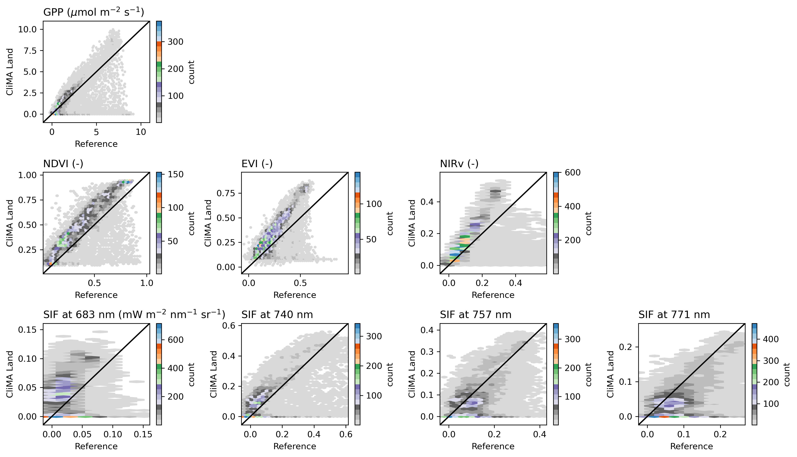
a11-gm3-wd1
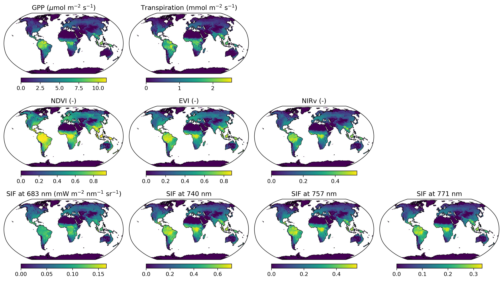
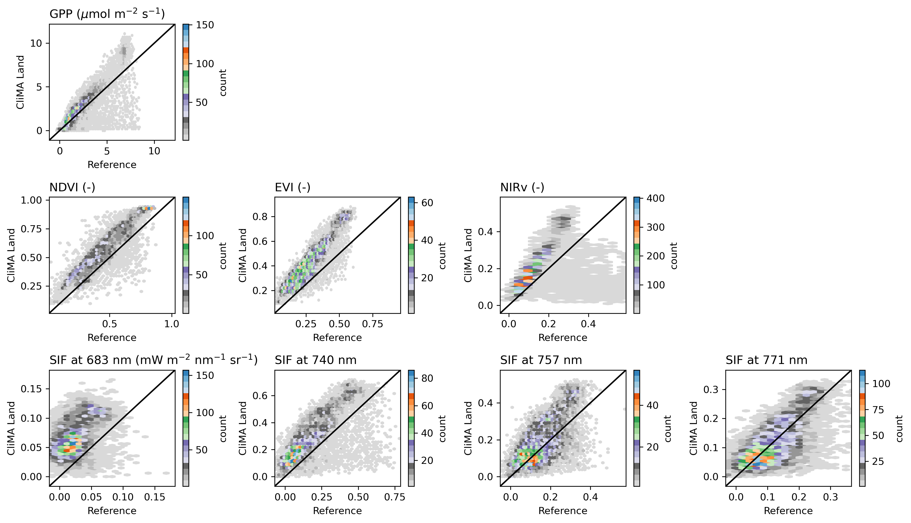
a11-gm2-wd1
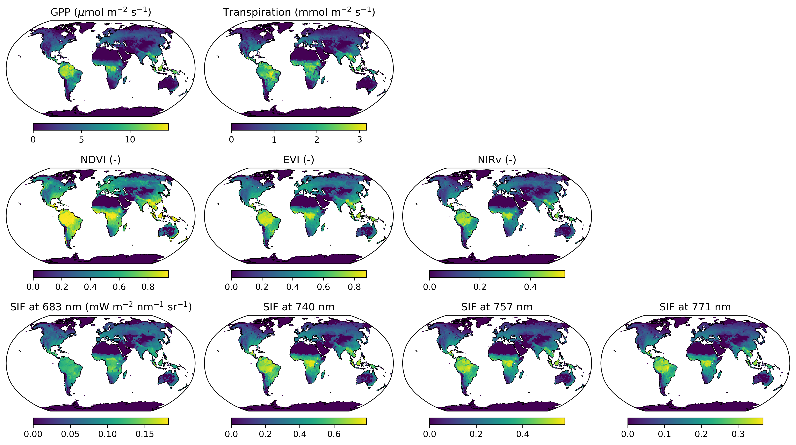
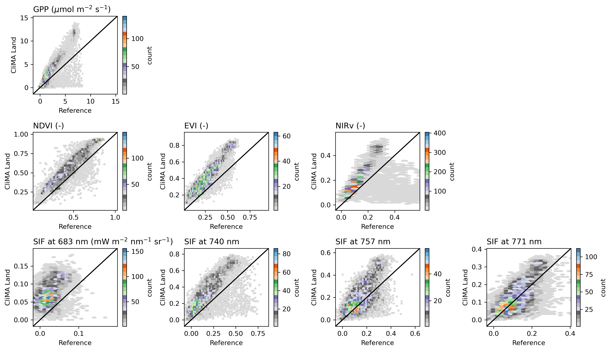
a10-gm2-wd1
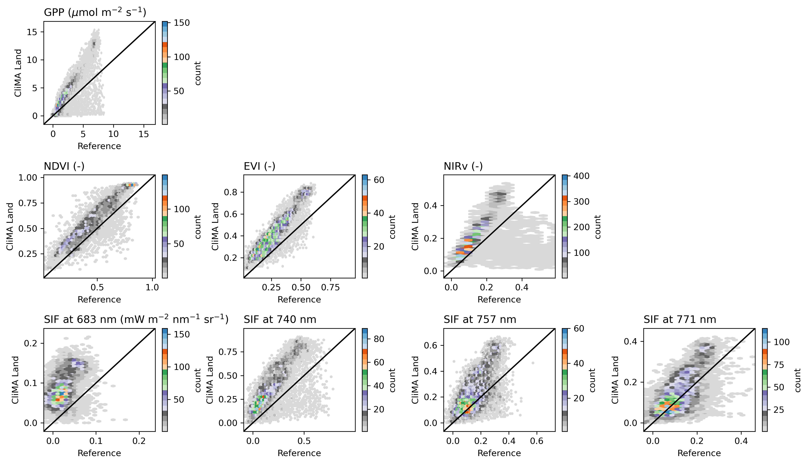
a9-gm2-wd1
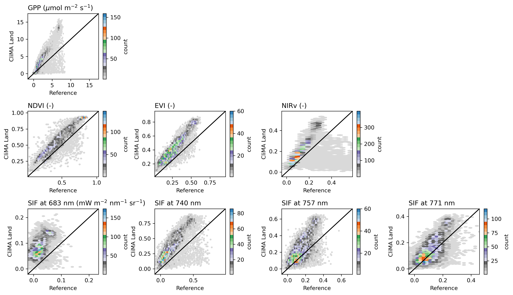
a8-gm2-wd1
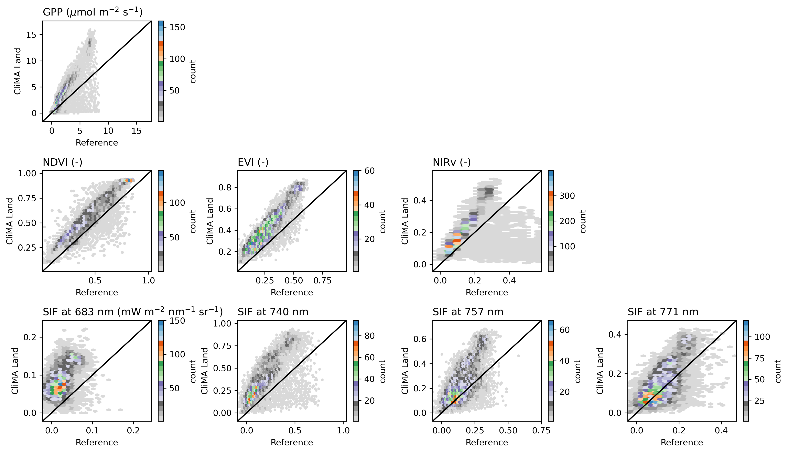
a7-gm1-wd1
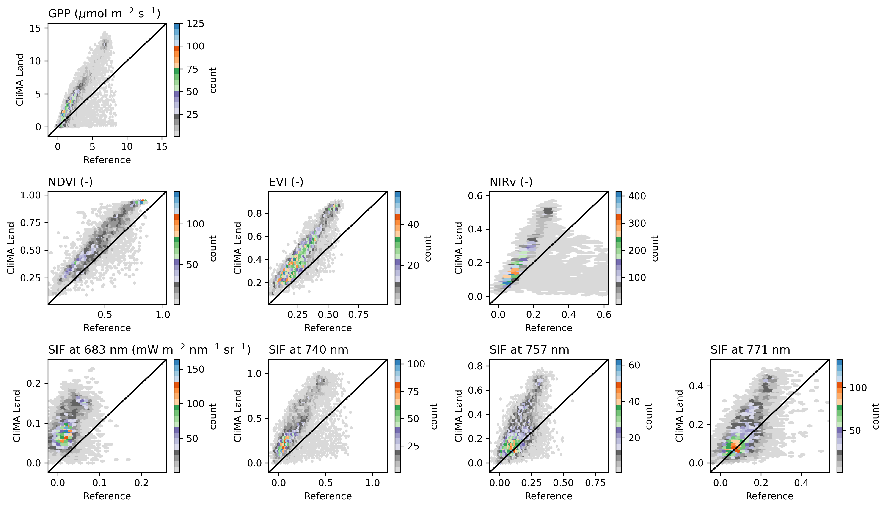
a6-gm1-wd1
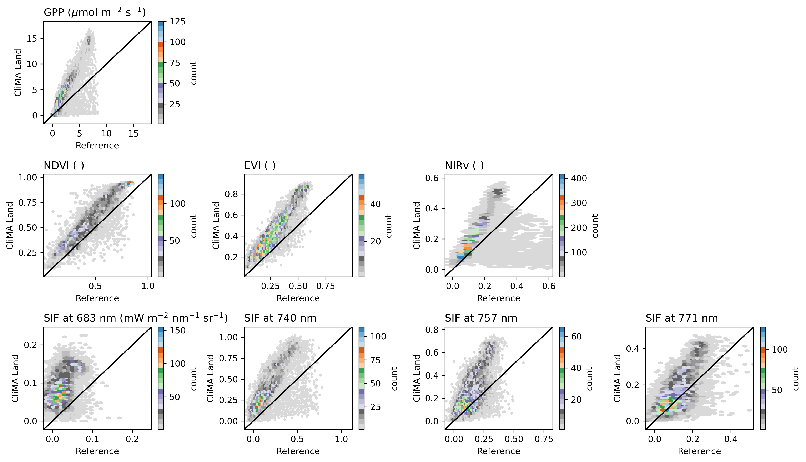
a5-gm1-wd1
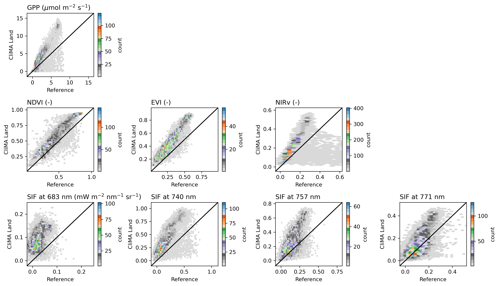
a4-gm1-wd1
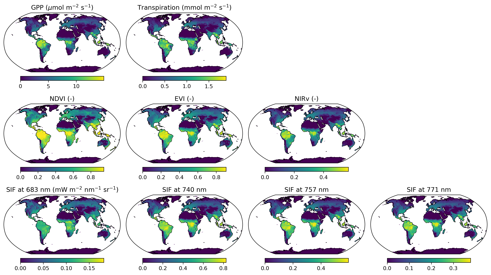
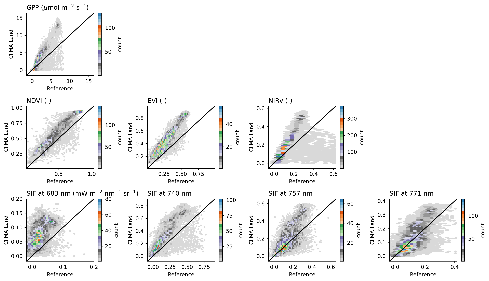
a3-gm1-wd1


a2-gm1-wd1
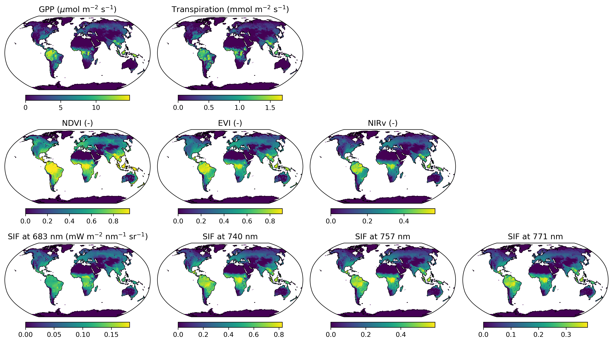
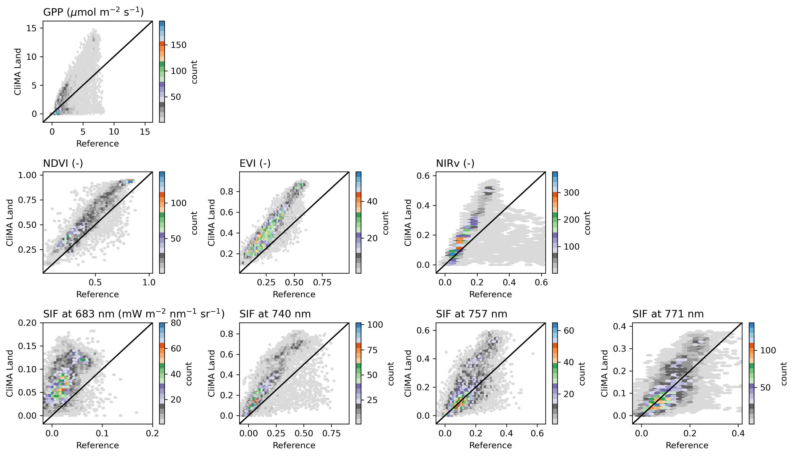
a1-gm1-wd1
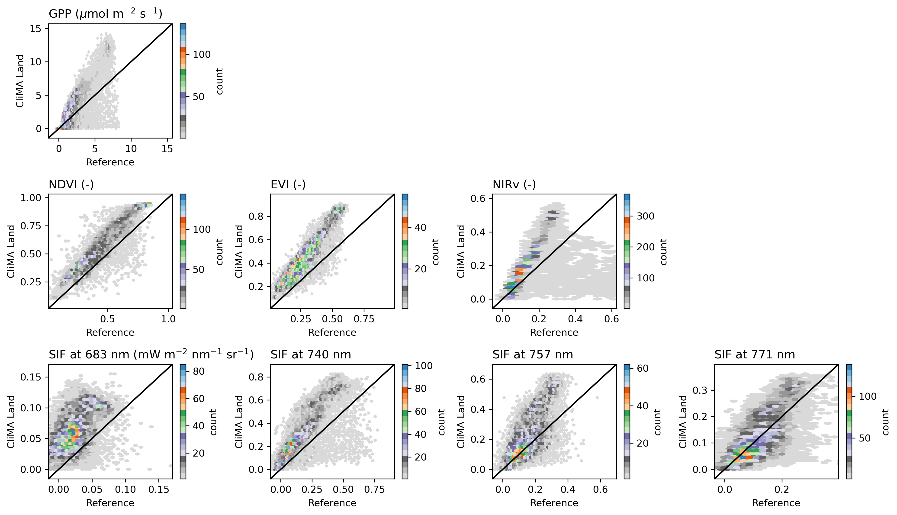